Hot Working: Deformation occurs above recrystallization temperature $T_{\text{recrys}}$. Metal recrystallizes continuously, allowing larger deformations with lower forces. Produces refined grain structure, eliminates segregation. Disadvantages: lower accuracy, surface oxidation (scale), tooling cost.
Cold Working: Deformation below $T_{\text{recrys}}$. No recrystallization during forming; work-hardening increases strength and hardness. Better dimensional accuracy and surface finish. Higher forces required. Examples: cold rolling sheet steel, wire drawing, coin stamping.
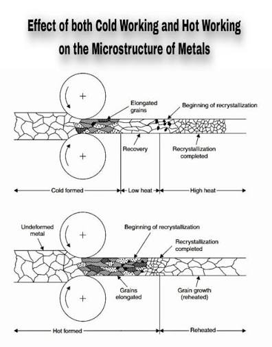
Critical Fact: Temperature classification is material-specific, not process-specific. Lead rolled at 20°C is hot working (since $T_{\text{recrys}} \approx 0$°C for lead); steel at 400°C is cold working (since $T_{\text{recrys}} \approx 700$°C for steel).
| Defect / Phenomenon | Process / Stage | Root Cause / Condition | Prevention / Remedy |
|---|---|---|---|
| Scale / Oxidation | Hot Working (Rolling, Forging) | Workpiece exposed to high temp in air; thick oxide layer formed at surface. | Use protective atmosphere (inert gas, salt bath); apply scale-breaking rolls; descale after each pass. |
| Segregation | Ingot (Prior to Hot Working) | Dendritic solidification; alloying elements concentrate at grain boundaries during cooling. | Hot working breaks up segregation; recrystallization in hot working refines structure; homogenizing heat treatment. |
Two-High Mill: Simple arrangement; both rolls rotate in same direction. Used for reversing mills (back and forth passes).
Three-High Mill: Three horizontal rolls; allows continuous rolling in one direction by moving workpiece between different roll pairs.
Four-High Mill: Two work rolls (small, load-bearing) supported by two backup rolls (large). Reduces deflection, enables thinner gauge rolling.
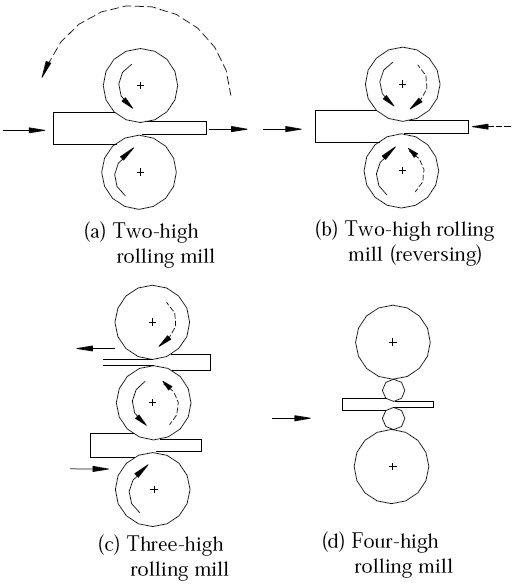
Maximum Possible Draft: Determined by roll radius and friction coefficient. Draft cannot exceed $\mu^2 R$ (where $\mu$ is friction, $R$ is work roll radius in mm). Exceeding this limit causes workpiece to slip.
Where: $\mu$ = coefficient of friction (contact), $R$ = work roll radius (mm). Exceeding $\mu^2 R$ causes slip. Practical maximum usually 35–40% reduction in single pass.
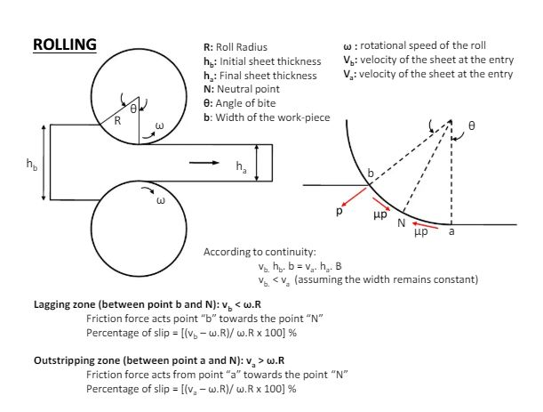
For rolling: Strain relates to draft $\Delta h = h_0 - h_f$. Larger drafts demand lower friction or higher roll temperature.
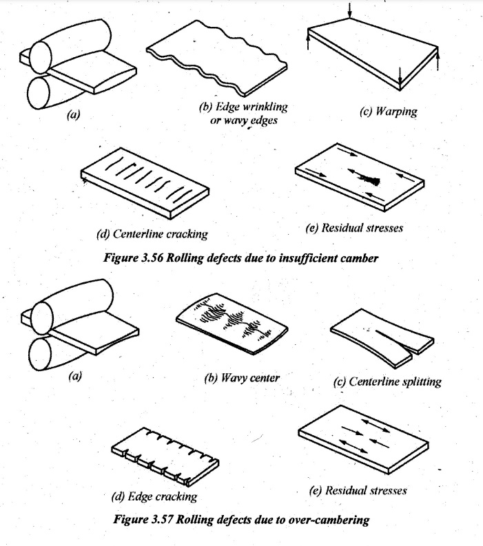
Root Cause of Rolling Defects: Rolling defects mainly occur due to unequal elongation across the strip width, which creates locked-in residual stresses. The single most critical root cause of non-uniform reduction across strip width is improper roll camber (crown).
Under roll load, rolls deflect (bend). With insufficient camber, the roll gap is smaller at the edges than in the center. Consequently, edges undergo greater reduction and become longer than the center.
| Defect | Stress State | Root Cause / Mechanism |
|---|---|---|
| Wavy Edges | Edge Compression | Edges elongate more than the center; constrained center puts edges into compression, causing buckling (waving). |
| Centerline Cracking (Zipper Cracks) | Center Tension | Center is stretched longitudinally by the longer, elongating edges until central tensile fracture occurs. |
| Warping | Uneven Residual Stresses | Non-uniform reduction across strip width creates complex 3D residual stress state. |
When rolls have excessive initial camber (crown), the roll gap is smaller at the center than at the edges. Consequently, the center undergoes greater reduction and becomes longer than the edges.
| Defect | Stress State | Root Cause / Mechanism |
|---|---|---|
| Wavy Center (Center Buckle) | Center Compression | Center elongates more than the edges; constrained edges put center into axial compression, causing buckling (center wave). |
| Edge Cracking | Edge Tension | Edges are stretched longitudinally by the longer, elongating center until edge transverse cracking occurs. |
| Centerline Splitting | Severe Center Deformation | Excessive center elongation causes localized necking and longitudinal splitting along centerline. |
| Parameter / Feature | Insufficient Camber (Bending Deflection) | Over-Cambering (Excessive Crown) |
|---|---|---|
| Primary Buckling Defect | Wavy Edges | Wavy Center (Center Buckle) |
| Primary Cracking Defect | Centerline Cracking (Zipper Cracks) | Edge Cracking |
| Edge Stress State | Edge Compression | Edge Tension |
| Center Stress State | Center Tension | Center Compression |
| Relative Elongation | Edges longer than center | Center longer than edges |
| Defect Type | Process / Mode | Key Characteristic & Root Cause | Prevention / Remedy |
|---|---|---|---|
| Alligatoring | Rolling (Slab/Plate) | Strip splits along mid-thickness plane into upper and lower halves; caused by non-uniform frictional shear and tensile stresses at center during heavy reduction. | Maintain uniform reduction; optimize roll diameter and lubrication; ensure homogeneous slab temperature. |
| Warping | Rolling (Strip) | Bending/twisting of strip due to non-uniform residual stresses across width or thickness. | Perform leveling/roller flattening; ensure symmetric roll cooling and balanced reduction. |
| Residual Stresses | Cold/Hot Rolling | Locked-in internal stresses remaining in material after deformation due to non-uniform plastic flow across thickness. | Stress relief annealing; light skin-pass (temper) rolling. |
| Lap | Rolling / Forging | Folded metal rolled into the surface without welding; caused by excessive flash or misaligned passes. | Proper pass design; remove surface fins/flash prior to subsequent rolling pass. |
| Seam | Rolling (Bar/Rod) | Longitudinal surface crack or defect resulting from rolled-in gas blowholes or surface inclusions from ingot. | Condition ingot surface (conditioning/grinding); clean steelmaking practices. |
| Rolled-in Scale | Hot Rolling | Surface oxide scale pressed into sheet surface during rolling, causing surface pitting/roughness. | High-pressure water descaling before roll entry; scale-breaking rolls. |
| Surface Cracks (Longitudinal) | Hot Rolling | Non-uniform cooling; tensile stress at surface during reheating; low surface ductility. | Uniform heating; controlled cooling rate; remove surface defects before rolling. |
| Thickness Variation | Sheet Rolling | Roll bending/deflection under load; non-parallel rolls; uneven roll wear. | Four-high / cluster mills with backup rolls; automatic gauge control (AGC); proper roll camber. |
Upsetting: Compressive force reduces height, increases cross-sectional area. Used for bolt heads, rivet heads, ring enlargement.
Fullering (Drawing Out): Reduces cross-sectional area, increases length. Concentrates flow in one direction; often used as intermediate operation.
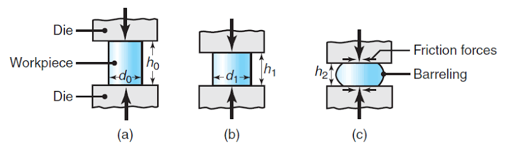
Drop Forging (Closed-Die): Workpiece forged between two dies; flash extrudes into flash gutter at parting line. Flash acts as pressure buildup mechanism, forcing metal into die cavity corners. Produces superior grain refinement compared to open-die.
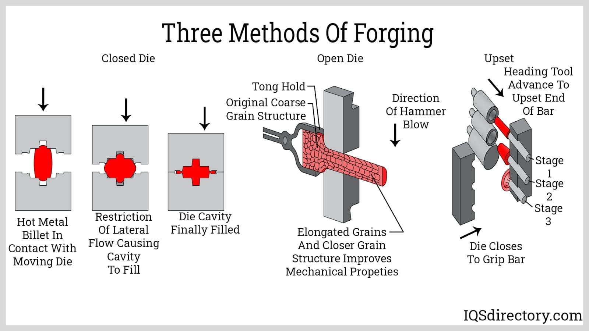
Coining: Cold closed-die process (no flash relief). High pressure forces metal into smallest die details; produces precise surface impressions (coins, medals, jewelry dies).
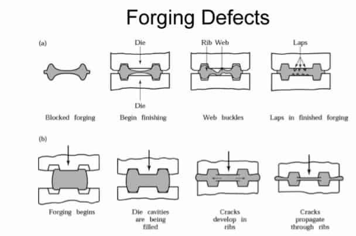
| Defect Type | Process | Root Cause / Condition | Prevention / Remedy |
|---|---|---|---|
| Barreling | Upsetting, Forging | Friction at die-workpiece interface prevents flow near surface; center flows faster than outer regions. | Reduce friction (lubrication); lower die temp; reduce height-to-diameter ratio; use open-die techniques. |
| Flash (Unwanted) | Drop Forging | Excess material flows out of die cavity into flash gutter during impression forging. | Tight die design; optimize flash gutter geometry; trim flash after forging; control stock weight accurately. |
| Fiber Misalignment | Forging (Open-Die) | Incomplete working; metal flows around obstacles rather than uniformly; insufficient deformation at edges. | Increase number of forging blows; use drop forging (closed die) for uniform strain; intermediate fullering to realign flow lines. |
Direct (Forward) Extrusion: Ram pushes billet through die; billet and ram move in same direction. Simple tooling; high friction at container wall.
Indirect (Backward) Extrusion: Die mounted on ram; moves toward stationary billet. Lower friction; complex tooling. Produces hollow shapes efficiently.
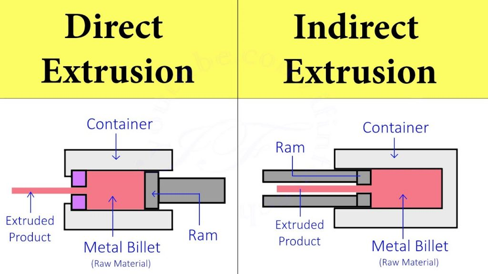
Hydrostatic Extrusion: Pressurized liquid surrounds billet, eliminating container-wall friction. Superior surface finish, ability to extrude brittle materials, reduced force.
High-Temperature Lubricant (Steel Extrusion): Conventional oils break down $>1000$°C. Molten glass serves as both thermal insulator and lubricant in Sejournet process.
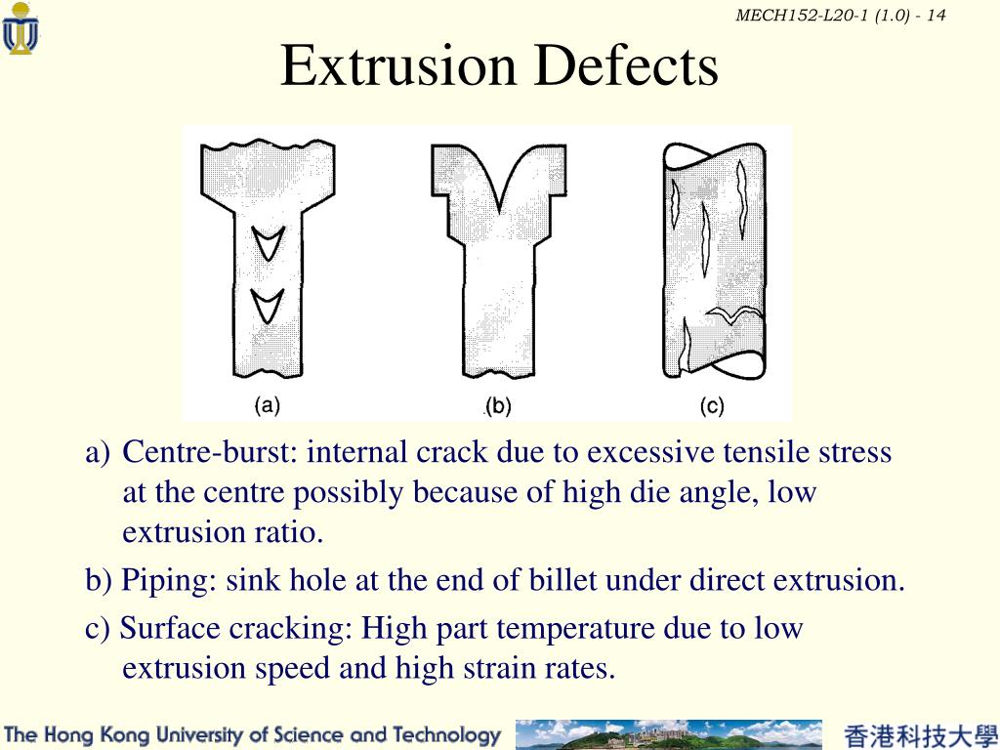
| Defect Type | Process | Root Cause / Condition | Prevention / Remedy |
|---|---|---|---|
| Chevron Cracks (Center Cracking) | Extrusion (High Temp Steel) | Hydrostatic tensile stress in center of billet; low ductility at high temp; rapid cooling after extrusion. | Lower extrusion speed; increase billet temp (within safe range); use die preheat; hydrostatic extrusion to reduce tensile stress. |
Wire Drawing: Workpiece pulled through converging die. Stress state: axial tension + radial compression. Surface finish and diameter control superior to rolling. Used for fine wires.
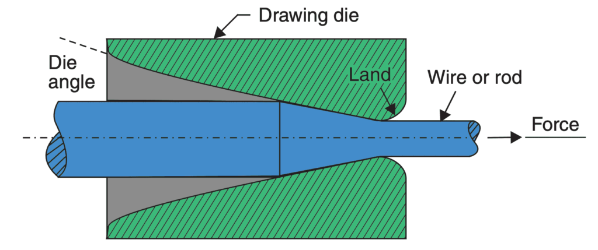
Rotary Swaging: Radial impact hammering reduces diameter or forms tapers on rods and tubes. Rapid, produces high surface quality.
Thread Rolling: Cold forming process for ductile materials. No material removal; threads formed by plastic deformation. Higher fatigue strength than cut threads (no stress concentration from tool marks).
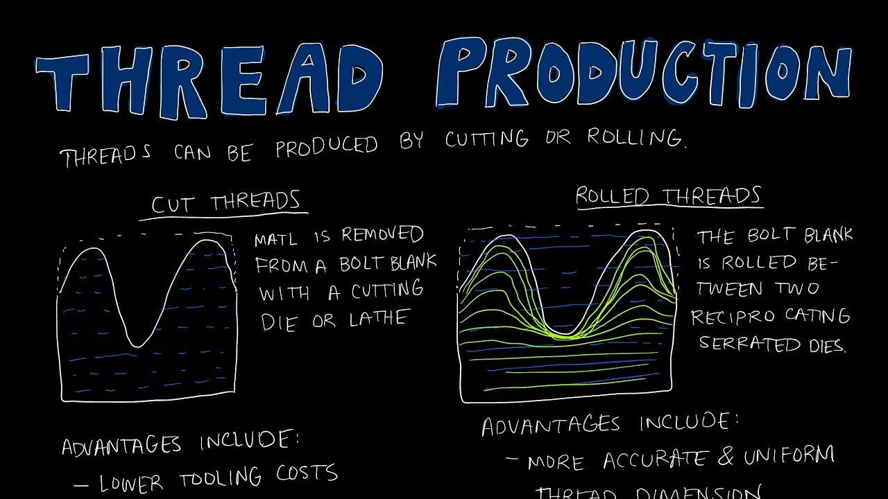
| Defect Type | Process | Root Cause / Condition | Prevention / Remedy |
|---|---|---|---|
| Poor Surface Finish | Cold Drawing, Rolling | Scale not removed before forming; die/roll surface rough; inadequate lubrication; micro-scoring. | Pickling before cold forming; smooth, polished tooling; premium lubricants; polishing dies and rolls. |
Blanking: Desired part is the slug removed from sheet. Punch size is smaller than desired blank (clearance subtracted from punch). Die size = blank size (exact).
Punching: Desired part is the remaining sheet with hole. Punch size = hole size (exact). Die size is larger than hole (clearance added to die).
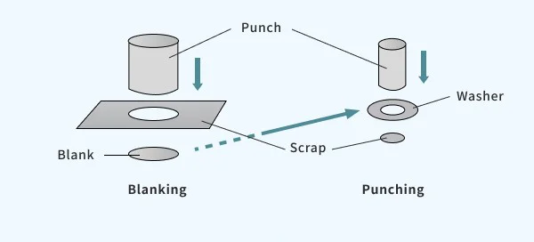
Shear Stress Mode: Both blanking and punching fail in pure shear. Maximum shear stress $\tau_{\max}$ occurs at punch-die interface. Total force is product of perimeter × thickness × shear strength.
Where: $d$ = diameter, $t$ = thickness, $\tau$ = shear strength. For polygonal profiles: $F = p \cdot t \cdot \tau$ (perimeter $p$).
Where: $t$ = sheet thickness (mm), $\tau$ = shear strength (MPa). Allocate half on punch, half on die (or follow design guidelines).
| Defect Type | Process | Root Cause / Condition | Prevention / Remedy |
|---|---|---|---|
| Burr Formation | Blanking, Punching, Shearing | Excessive clearance between punch and die; material ductility causes plastic deformation at shear edge; dull cutting edges. | Reduce clearance to optimal value ($C = 0.0032 t\sqrt{\tau}$); maintain sharp tool edges; cold shearing reduces burr. |
Bending Stress Distribution: Outer radius in tension; inner radius in compression. Neutral axis does not coincide with geometric centerline; shifts toward inner surface (factor $k = 0.33 \to 0.5$ depending on $t/R$ ratio).
Springback: Elastic recovery upon load removal. Minimized by bottoming (forcing die), over-bending, or stretch bending (tension applied during bend).
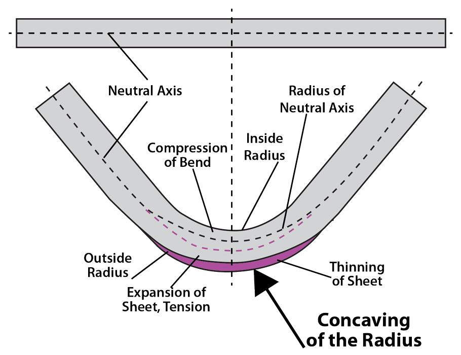
Sheet Orientation: Material should be bent perpendicular to rolling/grain direction to prevent edge cracking. Rolling direction creates directional weakness.
Where: $\alpha$ = bend angle (radians), $R$ = radius of neutral axis (punch radius $r_p$ + $k \cdot t$), $k$ = position factor ($\approx 0.33 \text{ to } 0.5$, depends on $t/R$ ratio), $t$ = thickness.
Sum of straight sections plus bend allowance for multi-bend layouts.
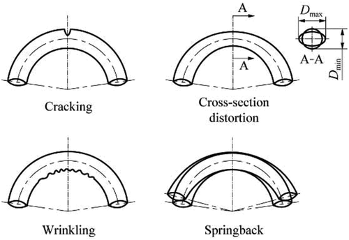
| Defect Type | Process | Root Cause / Condition | Prevention / Remedy |
|---|---|---|---|
| Springback | Bending | Elastic recovery after load removal; depends on $E$, $\sigma_y$, $t/R$ ratio, forming method. | Over-bend; use bottoming force (complete die contact); stretch bending; surface conditioning (shot peening). |
Deep Drawing: Forms flat blank into 3D cup. Flange region sustains radial tension and circumferential compression. Wrinkling in flange prevented by blank-holder force.
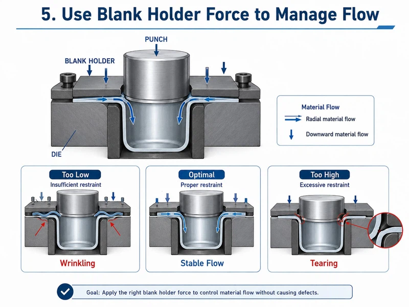
Where: $d$ = cup diameter, $h$ = cup height. Assumes small corner radius and neglects thickness change. Accounts for surface area conservation (flat disc → cylindrical cup).
Limits: First draw $\beta \le 2.0$ to $2.2$ (depending on material). Subsequent draws lower ratio to prevent tearing.
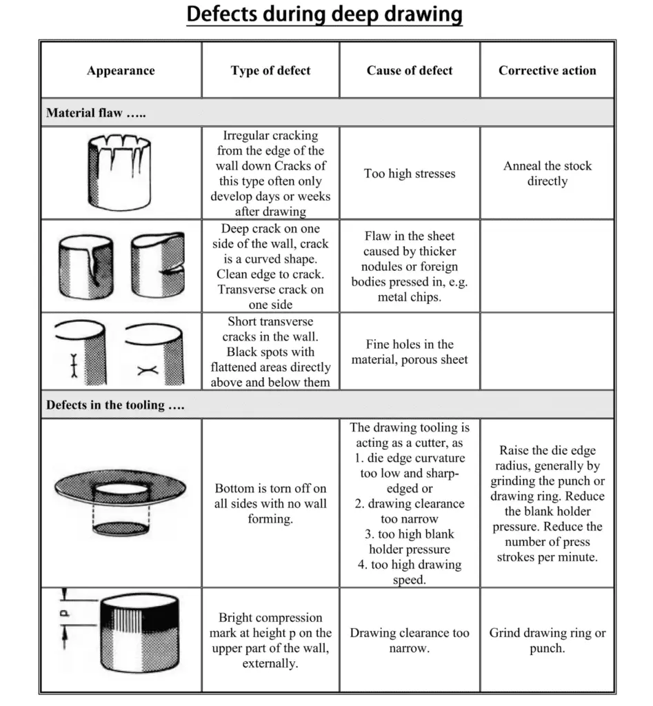
| Defect Type | Process | Root Cause / Condition | Prevention / Remedy |
|---|---|---|---|
| Tearing / Fracture | Drawing, Extrusion | Excessive strain rate; high draft in single pass; material brittleness at forming temp; low ductility. | Reduce draft / draw ratio per pass; increase temp (hot working); anneal between passes; improve material composition. |
| Wrinkling | Deep Drawing, Bending | Insufficient blank-holder force in flange; compressive hoop stress buckles thin flange; low friction. | Increase blank-holder pressure; improve lubrication; use multi-stage drawing; re-anneal between passes. |
| Earing | Deep Drawing (Cups) | Anisotropic material behavior; directional grain structure aligned to rolling direction; asymmetric strain distribution. | Rotate blank orientation relative to rolling direction; use isotropic material; four-point drawing die. |
Revision Focus Areas (Frequency-Ranked):
1. Blanking/Punching clearance rules | 2. Rolling draft formula | 3. Deep
drawing blank size | 4. Hot vs cold working | 5. Forging operations